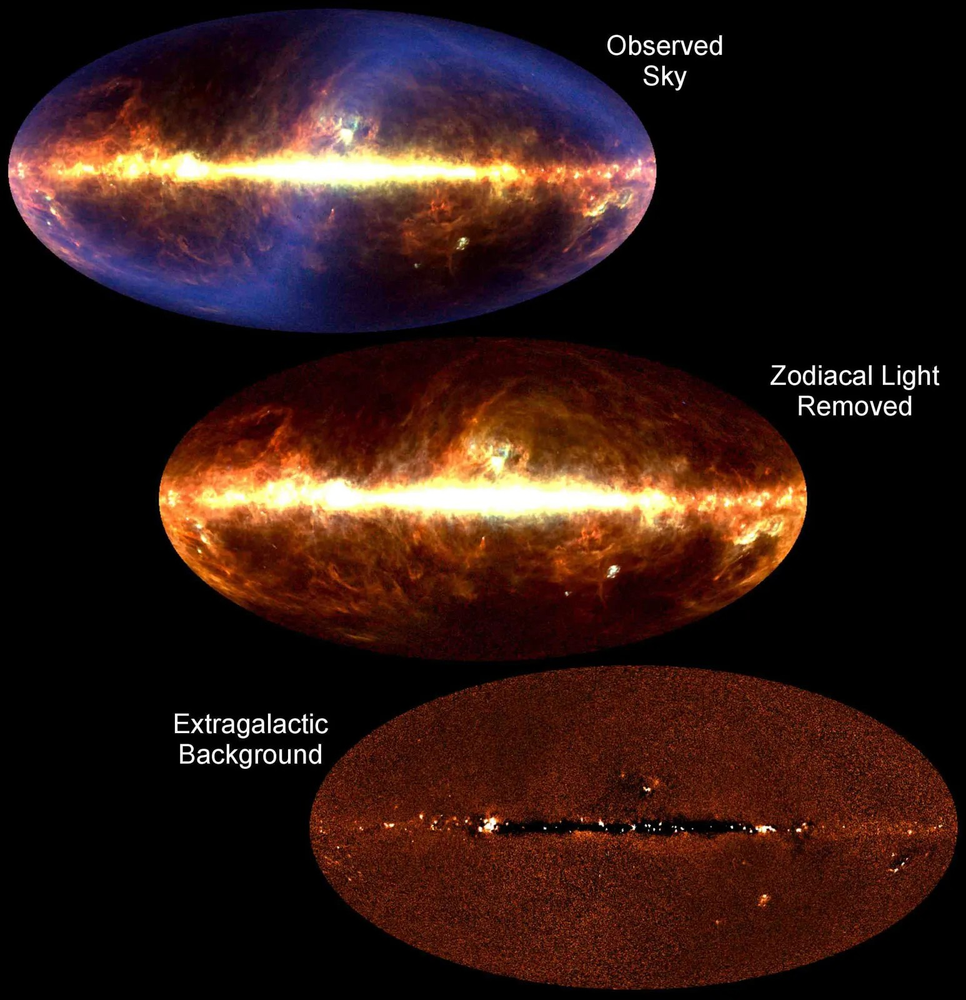
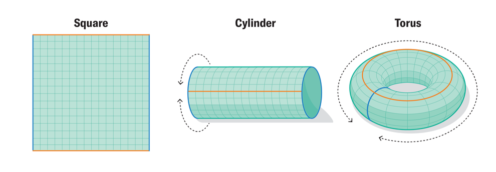
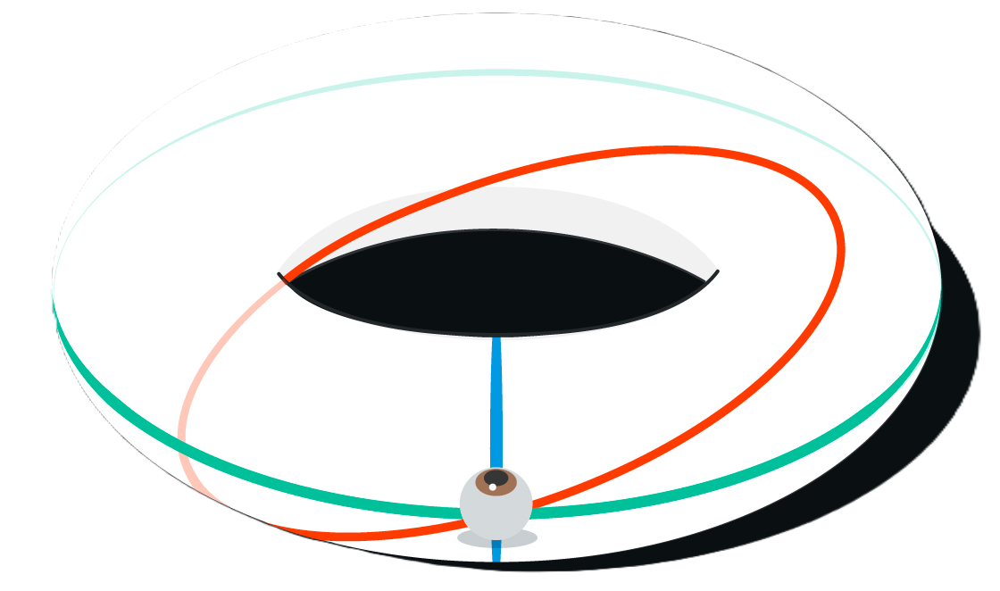

THE SHAPE OF THE UNIVERSE
The true shape of the universe is one of the deepest open questions in modern cosmology. Scientists describe the shape of the cosmos in two fundamental ways: geometric curvature (which determines how space bends locally) and topology (which describes how space is connected on the largest scales). These two concepts work together to define whether the universe is infinite or finite, flat or curved, simply connected or folded into exotic repeating structures. Over the last decades, increasingly precise measurements have brought us closer to understanding this cosmic puzzle than ever before.
A major milestone came with the Planck mission (launched about a decade ago). One of its primary goals was to determine whether the universe is perfectly flat or has a slight curvature. By analyzing tiny temperature variations in the cosmic microwave background (the afterglow of the Big Bang), Planck discovered that the universe appears astonishingly flat, with any possible curvature limited to an error of about 1 part in 500. This means that if the universe is curved at all, its radius of curvature is at least 500 times larger than the radius of the observable universe. Our entire cosmic horizon would then be just a minuscule patch on a vast curved surface far too large for us to detect. This is why (even over enormous distances) straight lines and light beams neither converge nor diverge in empty intergalactic space. If they did, we would immediately know that the universe is positively or negatively curved. Instead, they remain parallel, deviating only in the presence of mass (galaxies, stars, and black holes) which produces localized curvature but does not affect the global shape of the cosmos.

Understanding curvature is only half the story. The other half lies in topology, the study of how space is globally connected. Even a universe that is perfectly flat can have a rich and surprising topology. One popular possibility is that the universe could be shaped like a 3-dimensional torus (a higher-dimensional analogue of a donut-like space). In such a universe, traveling far enough in one direction could, in principle, bring you back from the opposite side. Light itself could wrap around space, potentially allowing us to see distant galaxies multiple times from different angles or even at different stages of their evolution.


This idea leads to fascinating scenarios. In a small enough toroidal universe, we could theoretically see a galaxy dying in one direction while its much younger version appears from another, because its light would have taken different wrap-around paths to reach us. However, this possibility becomes practically impossible in a universe that expands as rapidly as ours. Space is stretching, and beyond a certain distance (known as the cosmic event horizon) the expansion of the universe outruns the speed of light. This does not violate relativity (objects are not moving through space faster than light; instead, space itself is expanding faster than light can cross). As a result, any photon attempting to circle the universe is effectively carried away faster than it can travel forward. If the universe possesses a toroidal or donut-like topology, it must be so large that no wrap-around signals have had time to reach us (and perhaps never will). This also means that no traveler, no spacecraft, and no signal could ever circumnavigate the universe, because the expansion increases distances faster than anything can move through them.
Beyond toroidal possibilities, cosmologists explore many other potential topologies. A positively curved universe might have the shape of a 3-sphere (a higher-dimensional analogue of the surface of a globe) where a “straight” path would naturally loop back if expansion did not prevent it. The famous Poincaré dodecahedral space envisions the universe tiled by repeating dodecahedra whose opposite faces connect with a twist (creating a finite cosmos without edges). Hyperbolic topologies arise from negatively curved space and allow intricate multi-connected shapes built from repeating hyperbolic tiles that stretch outward like a cosmic mosaic. More exotic manifolds (such as Klein bottle–like spaces or non-orientable geometries) are mathematically possible, though considered unlikely in physical cosmology. Some speculative theories even propose fractal-like or quasi-periodic topologies, especially in higher-dimensional models (though these remain theoretical curiosities).
Despite this multitude of possibilities, current observations reveal no repeating patterns in the distribution of galaxies or in the cosmic microwave background that would indicate a small or tightly wrapped universe. Combined with the extremely precise flatness measurement from Planck, the evidence suggests one of two major scenarios: either the universe is truly infinite, extending forever in all directions, or it is finite but extraordinarily large (with a topology so vast that no light has completed a full loop). In either case, the observable universe is only a limited region of a far larger reality.
What we see today is a cosmos that behaves almost perfectly flat, following the familiar rules of Euclidean geometry across tens of billions of light-years. Straight lines remain parallel, triangles have angles summing to 180 degrees, and light behaves as if traveling through a perfectly flat space (except where mass locally distorts spacetime). Yet the universe may still possess a global shape or connectivity beyond our horizon (subtly curved or intricately folded across unimaginable distances).
In the end, the shape of the universe remains a profound scientific mystery. Modern measurements tightly constrain what it can be, yet they also reveal how much lies beyond our reach. Whether infinite or finite, curved or flat, simple or multiply connected, the universe continues to challenge our imagination (offering possibilities as vast and mysterious as the cosmos itself).